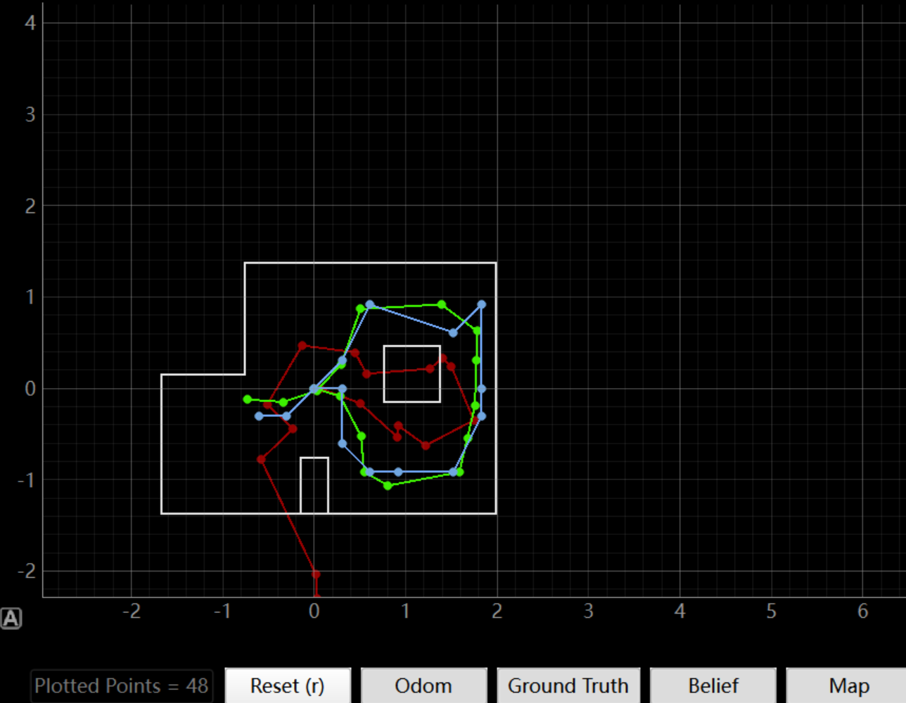
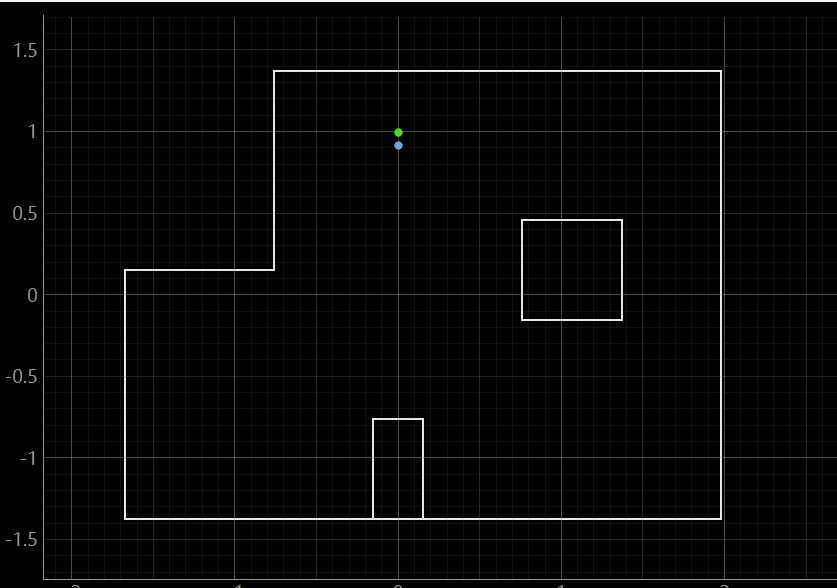
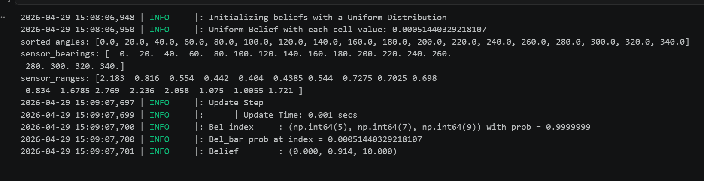
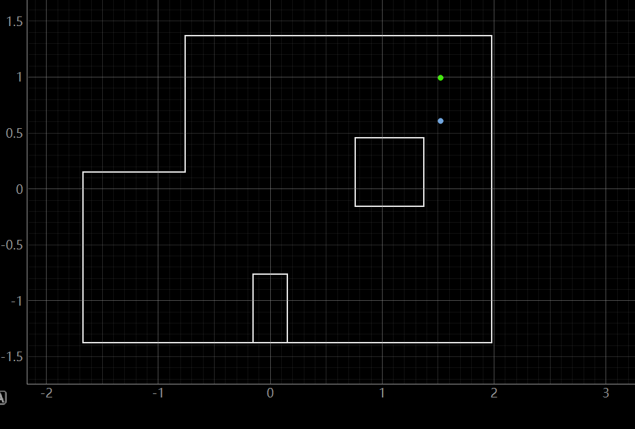
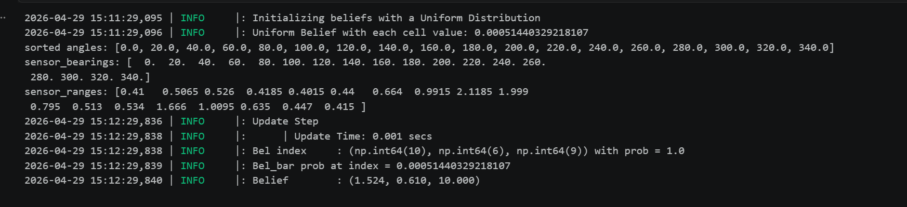
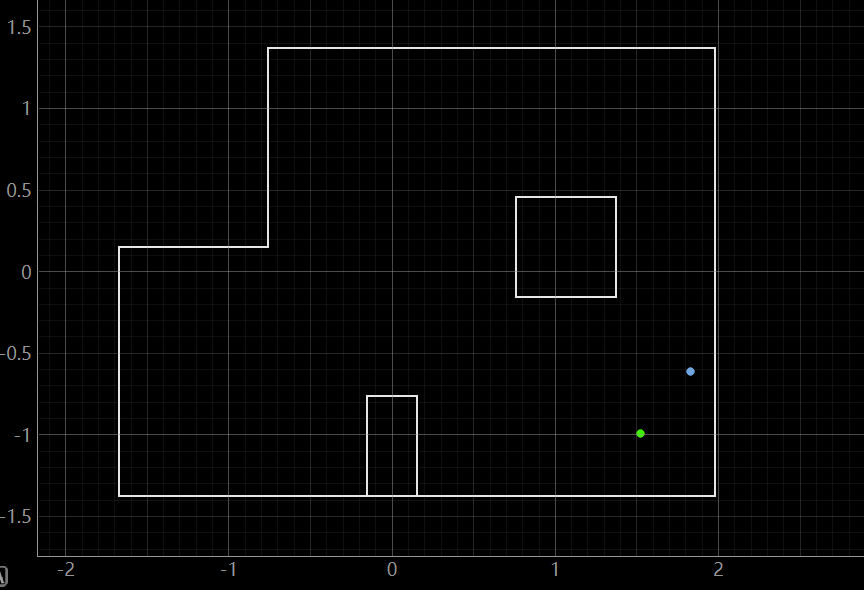
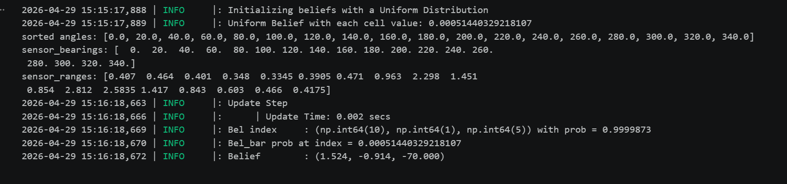
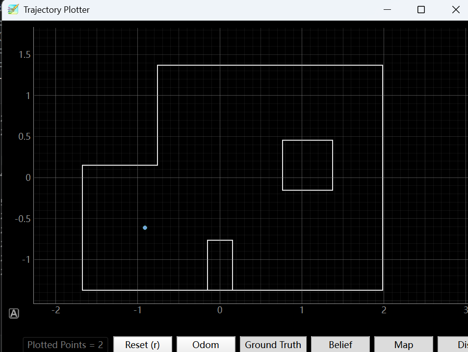
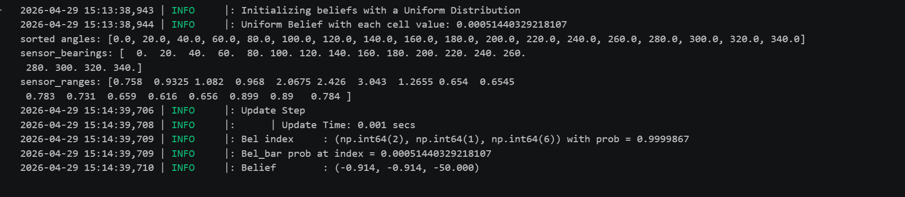

Lab 11: Localization on the Real Robot
Lab 11
Goals
The goal of this lab is to perform localization on the real robot using a Bayes filter, relying only on a full 360° ToF scan for the update step. It also aims to highlight the gap between simulation and real-world performance, especially under noisy sensing and motion conditions.
Simulation result
I started by verifying that the lab11_sim.ipynb file successfully produces the same localization results as from lab 10.
The simulation results show that the Bayes filter can use observation data to update the robot pose in a generally stable way within the virtual environment. Although there are still some deviations among the trajectories and local errors at certain positions, the overall motion pattern remains consistent with the map geometry, indicating that the observation model and update process are working properly in simulation. Overall, this provides a reasonable baseline for localization under ideal conditions and serves as a useful reference before applying the same method to the real robot.

Robot implementation
Arduino code modification
The Arduino code for Lab 11 was developed based on the Lab 9 mapping program. The original Lab 9 version already included motor control, yaw-based turning, and scan logging, so the main work in Lab 11 was to extend this framework for localization. The key modifications were the addition of localization scan states, a dedicated BLE command to start the observation loop, and a service routine that rotates the robot through fixed headings and records one ToF reading at each step.
// Added Lab 11 localization scan states
bool loc_active = false;
int loc_step = 0;
float loc_readings[18];
unsigned long loc_last_step_time = 0;
#define LOC_STABILIZE_MS 500
First, new state variables were introduced to manage the localization scan. These variables track whether the scan is active, the current angular step, and the ToF readings collected during the 360-degree rotation.
case GET_TOF_DATA:
Serial.println("Command: GET_TOF_DATA");
loc_step = 0;
yaw_deg = 0;
loc_active = true;
loc_last_step_time = millis();
break;
Second, a new BLE command was added so that the robot could enter a localization-specific scan mode instead of using only the mapping procedure from Lab 9.
void localization_service() {
if (!loc_active) return;
float target_yaw = loc_step * 20.0;
yaw_target_deg = target_yaw;
yaw_ctrl_active = true;
if (abs(wrap_angle_deg(yaw_target_deg - yaw_deg)) < 3.0) {
if (millis() - loc_last_step_time > LOC_STABILIZE_MS) {
loc_readings[loc_step] = (float)current_tof_reading;
loc_step++;
loc_last_step_time = millis();
if (loc_step >= 18) {
loc_active = false;
yaw_ctrl_active = false;
motor_active_brake();
}
}
} else {
loc_last_step_time = millis();
}
}
Finally, localization_service() was implemented to perform the Lab 11 observation loop.
The robot turns to evenly spaced target angles, waits briefly for stabilization, and stores one ToF reading at each position.
This modification allows the Lab 9 scan framework to be reused as the sensing component for Bayes filter localization in Lab 11.
real-world results
Result at marked pose (0 ft, 3 ft, 0 deg)


Figure 2 shows the localization result for the marked pose at (0 ft, 3 ft, 0 deg). The estimated belief is concentrated near the true position, and the plotted belief marker is very close to the ground-truth marker, indicating that the update step worked effectively at this test point. As shown in Figure 3, the observation loop successfully collected a full set of range measurements, and the Bayes filter produced the most likely pose at approximately (0.000, 0.914, 10.000). Since 0.914 m is close to 3 ft, the estimated position is consistent with the ground truth, with only a small heading error remaining in the final result.
Result at marked pose (5 ft, 3 ft, 0 deg)


Figure 4 shows the localization result for the marked pose at (5 ft, 3 ft, 0 deg). In this trial, the Bayes filter converged to a different region of the map than the nominal test location, so the position estimate was less accurate than in some of the other trials. As shown in Figure 5, the most likely pose was approximately (-1.524, 0.610, 10.000). Although this result does not match the intended marked pose, it still demonstrates that the filter was able to form a confident belief based on the collected observations, while also showing that some locations were more challenging for real-world localization than others.
Result at marked pose (5 ft, -3 ft, 0 deg)


Figure 6 shows the localization result for the marked pose at (5 ft, -3 ft, 0 deg). In this trial, the estimated belief is close to the expected position in the lower-right region of the map, indicating that the update step was able to identify the correct location reasonably well. As shown in Figure 7, the Bayes filter returned the most likely pose as approximately (1.524, -0.914, -70.000). Since 1.524 m and -0.914 m correspond closely to 5 ft and -3 ft, respectively, the position estimate is accurate, while the heading still shows a moderate error compared with the nominal 0 deg orientation.
Result at marked pose (-3 ft, -2 ft, 0 deg)


Figure 8 shows the localization result for the marked pose at (-3 ft, -2 ft, 0 deg). In this trial, the estimated belief is concentrated in the lower-left region of the map, which is consistent with the general ground-truth area. As shown in Figure 9, the Bayes filter returned the most likely pose as approximately (-0.914, -0.914, -50.000). Although the estimate does not exactly match the nominal marked pose, it still identifies a reasonable nearby location, showing that the update step can provide useful localization information on the real robot under noisy conditions.
Video 1 shows the real robot performing the in-place scanning motion used to collect ToF observations for the Bayes filter update. Although (0,0) point is not needed, here just shows as an example.
Discussion
Overall, the experiment showed that Bayes filter localization can be successfully applied to the real robot. The results were generally consistent with the map, and several marked poses were localized accurately or within the correct nearby region. Compared with simulation, the real-world tests showed greater sensitivity to sensor noise, ToF measurement quality, and communication timing, which affected the consistency of some results. Even so, the experiment demonstrates that the overall localization framework is effective on physical hardware and that the real robot can still produce meaningful belief updates from a full 360-degree scan.
Appendix
1. An announcement of AI usage
I used AI tools to support parts of this lab, mainly for webpage/HTML formatting, minor code edits and debugging, and polishing the written explanations for clarity and conciseness. Throughout the assignment, I verified the suggestions against the lab requirements, tested changes on my own setup, and made final design and implementation decisions independently based on my own understanding.